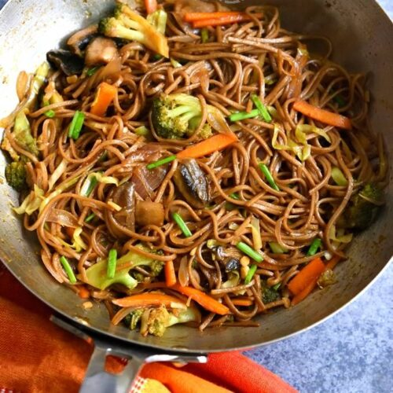

Yakisoba

Description
Yakisoba is a delicious but simple japanese dish consisting of noodles, vegetables and meat. Adding Yakisoba sauce will give it its special flavour.
Ingredients
- 1 package soba noodles
- 2 tablespoon soy sauce
- 4 tablespoon yakisoba sauce
- 1 onion
- 1 pound chicken
- etc.
Steps
- Bring a large pot of water to a boil. Cook soba in boiling water, stirring occasionally, until noodles are tender yet firm to the bite, 8 to 10 minutes. Drain and rinse in cool water. Set aside.
- Mix soy sauce, rice wine, and sugar together in a small bowl, stirring until sugar is dissolved.
- Heat oil in a wok or large skillet over medium heat. Add chicken and onion and cook in the hot oil for 3 to 5 minutes. Add cabbage, carrots, and ginger and cook until cabbage is softened, 3 to 5 minutes more.
- Place prepared noodles on top of chicken and vegetables in the wok. Pour sauce on top. Cover and cook another 3 to 5 minutes. Remove lid and toss mixture together until well combined. Sprinkle green onion over the mixture and serve.